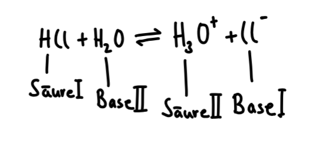
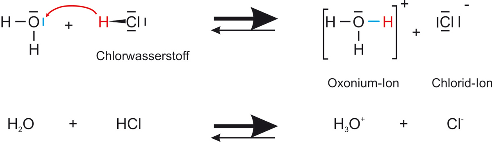
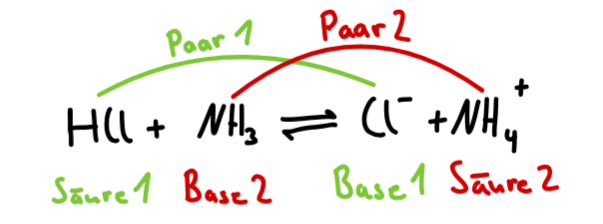
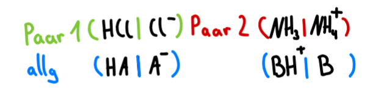
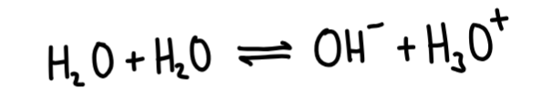

Protolysereaktion sind Protonenübertragungsreaktionen

Eine Säure überträgt ein Proton an eine Base. Die Säure wird dabei zur Base, die Base wird zur Säure. Es bilden sich korrespondierende Säure-Base-Paare

Korrespondierende
Säure-Base-Paare
An jeder Protolysereaktion sind 2 korrespondierende Säure-Base-Paare beteiligt.

Ein korrespondierendes Säure-Base-Paar besteht dabei aus einer Säure und der aus ihr hervorgehenden Base. Sie werden folgendermaßen notiert:

Protolysereaktionen
mit Wasser
Da Wasser ein Ampholyt ist, kann es in einer Protolysegleichungen als Base und/oder als Säure auftauchen. Dabei entstehen Hydroxid- und/oder Hydronium-Ionen, welche den pH-Wert der Lösung bestimmen

Diese Reaktion wird als Autoprotolyse des Wassers bezeichnet
Tipps
Säure-Base-Paare unterscheiden sich jeweils nur um ein Proton
Ampholyte beachte (wirken sie als Base oder Säure?)